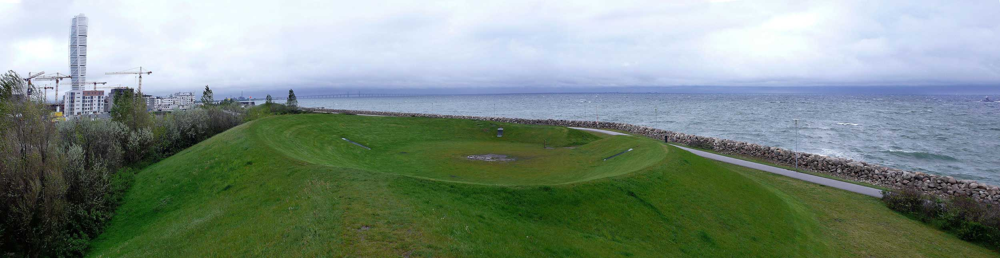
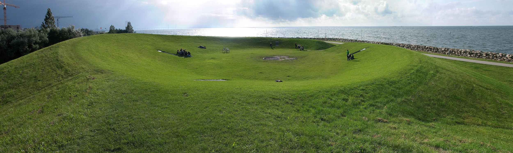
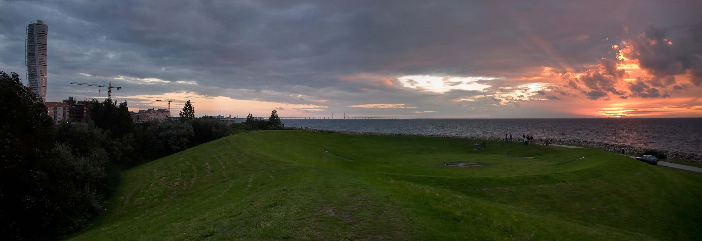
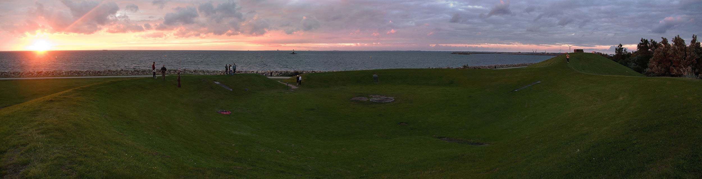
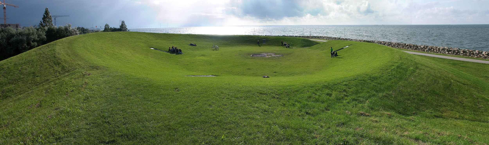
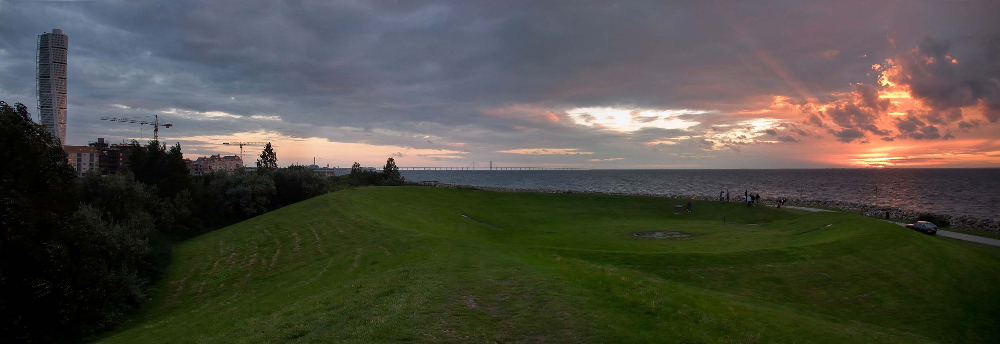
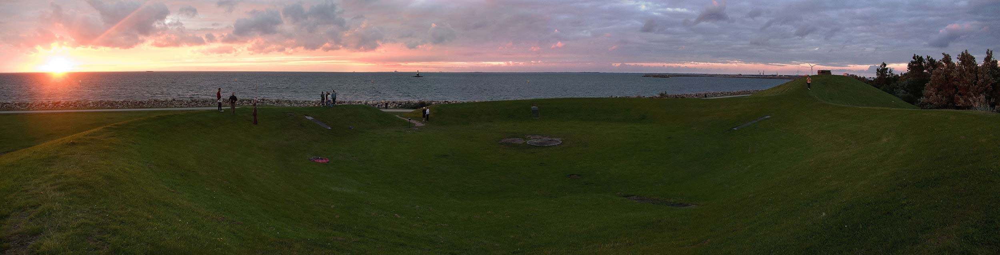

STARFIELD SIMULATION #32
Scaniaparken, Malmö
2007
Scaniaparken, Malmö
2007
Cyclone Scale
Sound art project curated by Frans Gillberg
Cyclone Scale is a meteorological term but also refers to sine waves and sound cycles and interferences and
"turbulences" between them.
The site at the edge of the water and the approaching cloud fronts coming from the sea inspired the piece.
"Cyclone Scale" is meant to play together with the sea wind mixing the sine waves into more complex tones and
chords like the passing thin cloud layers accumulate to thicker rain clouds.






